tahtakuruları biyologları dışarı
kaçırttı
evden kaçan kızlar bağlandı, ağızları tıkandı, onlar köpek kurtardı
ayaklanmayla karşı karşıya gelen
çar ıı. nikolay halka özgürlük verdi
felç cerrahın bıçağını durdu bir kalem darbesiyle Avrupa'daki son mutlak krallık tarihe karıştı Ölüm Vadisi madencisi ve Santa Fe Yolu'nun maymun iştahlı reklamcısı ölebilir plastik meleği çalmaktan hapishaneye atıldı
Uzaklardaki Wabash kıyılarından.
Mac
Ertesi sabah gün doğduktan hemen sonra Fainy, bardaktan boşanırcasına yağan yağmur altında, topallayarak Gaylord tren istasyonuna girdi. Bekleme odasında şişkin karınlı bir soba yanıyordu. Bilet gişesi kapalıydı. Görünürde hiç kimse yoktu. Fainy sırılsıklam olmuş pabuçlarından önce birini sonra ötekini çıkardı, çorapları kuruyana dek ayaklarını sobaya yapıştırdı. İki topuğunda da sivilceler çıkmış, yara olmuştu. Pis bir kabukla çoraplar yapışmıştı yaraya. Yine pabuçlarını giydi, sırada gerindi. Hemen uykuya daldı.
Maviler giymiş uzun boylu biri kendisiyle konuşuyordu. Başını kaldırmaya çabaladı, ama çok uykusu vardı.
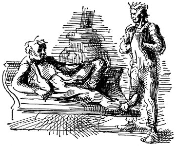
Daha önce de uykusunun arasında duymakta olduğu ses, “Hey aslanım, istasyon görevlisi seni burada bulmasa iyi olur,” diyordu. Fainy gözlerini açıp oturdu. “Vay canına, seni aynasız sandım.”
Geniş omuzlu, mavi pamuklu gömlekle iş pantolonu giymiş delikanlı tepesinde duruyordu. “Seni uyandırsam iyi olur diye düşündüm, buralarda istasyon görevlileri adamın gözünün yaşına bakmaz.”
“Sağ ol.” Fainy bacaklarını uzattı. Ayakları öylesine şişmişti ki zor basıyordu. “Vay canına, ölü gibiyim.”
“Şey, yirmi beşer sentimiz olsa şahane kahvaltı çekeceğimiz bir yer biliyorum.”
Fainy yavaşça, “Bir buçuk dolarım var,” dedi. Elleri cebinde, sırtını sıcak sobaya verip öteki çocuğun dört köşe, iri çeneli, mavi gözlü yüzüne bakarak durdu.
“Nerelisin sen?”
“Duluth'lu . . . Boşta geziyorum denebilir. Ya sen nerelisin?”
“Hay aksi, keşke bilseydim. Dün geceye kadar bir işim vardı.”
“İstifa mı ettin?”
“Şey, gidip şu kahvaltıyı etsek nasıl olur?”
“Harika. Dün de bir şey yemedim . . . Adım George Hall . . . Çocuklar bana Ike der. Biliyor musun, pek de boşta geziyorum sayılmaz. Dünyayı görmek istiyorum.”
“Sanırım ben de şimdi dünyayı görmek zorunda kalacağım,” dedi Fainy. “Adım McCreary. Chicago'danım. Ama doğuda, Connecticut'ın Middletown kasabasında doğdum.”
Demiryolu işçilerinin kaldığı yapının tel kafesli kapısını açtıklarında yüzlerine domuz pastırması, kahve, hamamböceği ilacı kokusu çarptı. Beygir dişli, sarışın, boğuk sesli bir kadın onlara masa hazırladı.
“Siz delikanlılar, nerede çalışıyorsunuz bakalım? Daha önce sizi gördüğümü hiç sanmıyorum.”
“Bıçkı fabrikasında çalıştım,” dedi Ike.
“Bıçkı fabrikası kapandı iki hafta önce, çünkü şef beynini patlattı.”
“Ben bilmiyor muyum sanki?”
“Hey delikanlılar, paraları önceden sökülseniz iyi olur.”
Bir dolarlık kâğıt parayı kadının yüzüne sallayan Fainy, “Param var benim,” dedi.
“İyi iyi, paranız varsa herhalde ödersiniz,” dedi garson kadın bir gülümsemeyle uzun, sarı dişlerini göstererek.
“Elbette pembe beyazım, milyonerler gibi öderiz,” dedi Ike.
Kahve, mısır lapası, domuz pastırması, büyük, kalın, beyaz kekle karınlarını bir güzel doyurdular. Kahvaltının sonunda Bingham'ın yaşamı, aşkları üzerine Fainy'nin anlattığı öykülere öylesine katılırcasına gülüyorlardı ki garson kadın içki içip içmediklerini sordu, Ike kadınla şakalaşarak kendilerine açıktan iki kahve daha getirmesini sağladı. Sonra da iş giysisinin cebinden ezilmiş iki sigara çıkardı. “Şu zıkkımdan alsana Mac?”
“Burada sigara içemezsiniz,” dedi garson. “Bizim patroniçe sigaraya bozulur.”
“Anlaşıldı, güzelim, tüyeceğiz şimdi.”
“Nereye gidiyorsunuz?”
“Ben kendi hesabıma Duluth'a gidiyorum. Bizim moruklar orada . . .”
“Demek Duluth'tansın ha? Şu Duluth için anlattıkları gülünç şey neydi?”
“Gülünç falan değil, büyük felaket.”
“Benimle dalga geçeceğini sanmıyorsun, değil mi?”
“Değmez buna tatlım.” Masayı temizlerken garson kadın kıkır kıkır gülüyordu. Kocaman kırmızı elleri, mutfakta çalışmaktan bembeyaz olmuş kalın tırnakları vardı.
“Hey, gazete var mı? Treni beklerken okuyacak bir şeyler istiyorum.”
“Ben getiririm sana. Hanım, Chicago'da çıkan American gazetesini alır.”
“Vay canına, üç haftadır gazete falan görmedim.”
“Ben de gazete okumayı severim,” dedi Fainy. “Dünyada neler olup bittiğini bilmek isterim.”
“Bir sürü yalan çoğu . . . hepsinin sahibi de büyük şirketler.”
“Hearst'ünki halkın yanında.”
“Ona da ötekilerden çok güvenmem.”
“Mantığa Çağrı'yı okudun mu?”
“Baksana bana, sosyalist misin sen?”
“Elbette, grevcilerin yanında yer aldığı için büyük şirketler işini kapatana dek dayımın matbaasında çalıştım.”
“Vay anasını, müthiş bir şey . . . İnan bana . . . ben de . . . Bak Mac büyük bir gün bugün benim için . . . benim gibi düşünen birine pek sık rastlamam da.”
Bir tomar gazeteyle dışarı çıkıp kentin biraz dışında bir çam ağacının altına oturdular. Güneş çıkmış, ortalığı ısıtıyor, büyük, beyaz, mermersi bulutlar gökte yüzüyordu. Timsah derisi gibi kabuklu, pembeye çalan kökün üzerine başlarını koyarak sırtüstü uzandılar. Bir gece önceki yağmura karşın altlarındaki çam iğneleri kuruydu, sıcaktı. Önlerinde uzayıp gidiyordu tek hatlı tren yolu; çalılıklar arasından, orda burda ayrıkotları yapraklarının uçuk yeşil sivri uçlarının sürmeye başladığı kesilmiş orman alanının açıklıkları arasından. Sırayla bir hafta öncesinin gazetelerini okudular, konuştular.
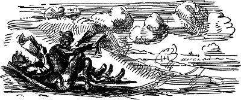
“Belki de Rusya'da başlar, insanların en kötü sömürüldüğü, en geri ülke orası . . . Bıçkı fabrikasında çalışan bir Rus vardı, eğitim görmüş biri, Sibirya'dan kaçmış . . . Çok konuşurduk onunla . . . O böyle derdi. Toplumsal devrimin Rusya'da başlayacağını, tüm dünyaya yayılacağını söylerdi. Esaslı adamdı. Bahse girerim önemli biriydi.”
“Tim Dayı, Almanya'da başlayacağını düşünürdü.”
“Aslında burada, Amerika'da başlaması gerekir . . . Bizim burada şimdi bile özgür kurumlarımız var . . . Yapmamız gereken şey büyük şirketlere çaktırmadan yolumuzu bulmak.”
“Tim Dayı derdi ki, Amerika'da biz gereğinden çok varlıklıyız . . . sömürünün, yokluğun ne demek olduğunu bilmiyoruz. O ve öteki dayılarım buraya gelmeden önce İrlanda'daki Fenianlardanmışlar.[6] Bu yüzden benim adıma Fenian demişler . . . Babam pek hoşlanmazdı bundan, galiba . . . pek yürekli biri değildi, sanırım.”
“Hiç Marx okudun mu?”
“Hayır . . . çok isterim ama.”
“Ben de okumadım, ama Bellamy'nin Geriye Bakış'ını okudum, işte beni sosyalist yapan o kitaptır.”
“Anlatsana bana da, evden ayrıldığımda okumaya yeni başlamıştım.”
“Serserinin teki uykuya dalıyor, iki bin yılında uyanıyor, her yerde devrim olmuş, her şey sosyalist, ne tutukevi var ne yoksulluk, hiç kimse kendisi için çalışmıyor, hiç kimse için varlıklı bir banker ya da kapitalist olma yolu yok, işçi sınıfı için de hayat oldukça keyifli.”
“İşte ben de hep böyle düşünürüm . . . Zenginliği yaratanlar işçiler, zenginlik de bir sürü beleşçinin değil onların olmalıdır.”
“Kapitalist düzenden, büyük tröstlerden, Wall Street'ten kurtulabilseydik her şey böyle olurdu.”
“Vay canına.”
“Bunun için gerekli şey de genel grev örgütlemek, işçilerin artık patronlar için çalışmaya karşı çıkmalarını sağlamak . . . Ama bir anlayabilselerdi bunun nasıl kolay olacağını. Tüm basın şirketlerin elinde, onlar da işçileri eğitimden, bilgiden yoksun bırakıyor.”
“Ben matbaacılığı oldukça iyi bilirim, linotip kullanmayı da . . . Canına yandığım, belki bir gün bir şeyler yapabilirim.”
Mac ayağa kalktı. Her yanı sızlıyordu. Bir bulut güneşi örtmüştü, ama demiryolunun aşağılarında incecik ormanlar, güneş altındaki genç huş ağacı yapraklarının altınsı yeşil parıltısıyla doluydu. Kanı alev alev yanıyordu. Demiryoluna bakarak bacaklarını ayırıp durdu. Uzaklarda bir dönemeçte, kahverengiler, koyu maviler giymiş bir görevlinin bulunduğu elle işletilen demiryolu arabası göründü. Yaklaşmasını izledi. Arabanın önünde küçük kırmızı bayrak sallanıyordu; gölgeden lekelerin içine dalıp çıkarak gittikçe büyüyor, büyüyordu, her keresinde daha da belirginleşerek, büyüyerek güneşten lekenin içine girdi.
“Bana bak Mac, şu yük katarına atlamak istiyorsak pek ortalıkta görünmeyelim. Buralarda acımasız tren dedektifleri var da.”
“Oldu.”
Yüz metre kadar yürüyüp yeni dikilmiş çam ve huş ağaçları ormanına girdiler. Üzeri yeşil kabuk bağlamış büyük bir kütüğün yanında Mac çişini yapmak için durdu. Çişi güneş altında sapsarı, pırıl pırıl akıp çürümüş yapraklarla ağaçlardan oluşmuş gözenekli toprağın içinde hemen gözden yitti. Çok mutluydu. Kütüğe tekme attı. Kütük çürümüştü. Ayağı içine battı. Kütük, arkadaki akçaağaç yaprağı yığınının içine yuvarlanırken duman gibi ince toz bulutu yükseldi.
Ike bir kütüğe oturmuş, küçük bir huş ağacı dalıyla dişlerini karıştırıyordu.
“Hiç deniz kıyısına gittin mi Mac?”
“Hayır.”
“Gitmek ister miydin?”
“Elbette.”
“İyi ya, gel ikimiz Duluth'a gidelim . . . Şöyle bir uğrayıp bizim kocakarıya merhaba demek istiyorum, anlarsın ya. Üç aydır görmedim. Sonra hasat zamanı buğday tarlasında çalışır, sonbahara da Frisco ya da Seattle'a gideriz. Seattle'da iyi, parasız gece okulları olduğunu söylüyorlar. Biraz okula gitmek istiyorum, anlarsın ya? Daha hiç bişi bilmiyorum.”
“Harika.”
“Hiç yük katarına atladın ya da trende kaçak yolculuk yaptın mı Mac?”
“Pek sayılmaz.”
“Yalnızca beni izle, yaptığımı yap. İşler yolunda gidecek.”
Demiryolunun aşağılarında lokomotif düdüğünün ıslığını duydular.
“Şimdi üç numara dönemeci alacak . . . İstasyondan çıkar çıkmaz atlayacağız. Bizi öğleden sonra Mackinaw City'ye götürür.”
O öğle sonrasının geç saatlerinde soğuktan donmuş, kaskatı kesilmiş durumda, sığınmak için Mackinaw City buharlı gemi rıhtımına gittiler. Gölden gelen yağmurlu sis altında yitmişti her şey. On sente bir paket şekerleme aldıklarından yalnızca doksan sentleri kalmıştı. İnce bir adam olan, yeşil siperli başlık, yağmurluk giymiş rıhtım görevlisi dışarı çıktığında, akşam yemeği için kaç para harcayabileceklerini tartışıyorlardı.
“Siz delikanlılar, iş mi arıyorsunuz?” diye sordu.
“Burada Göl Manzaralı Otel'den gelmiş biri var, birkaç işçi çocuk arıyor. Sanırım acente onlara yeterli yardımı göndermemiş. Yarın açıyorlar.”
“Kaç para veriyorlar?” dedi Ike.
“Pek fazla olduğunu sanmam, ama yemekler oldukça iyi.”
“Ne dersin Mac? Yol paramızı biriktirir, krallar gibi gideriz Duluth'a gemiyle.”
Böylece, o gece gemiyle Mackinaw Adası'na gittiler. Ada, oldukça sıkıcı bir yerdi. “Şeytan Kazanı” . . . “Şeker Parçası” . . . “Âşıklar Tepesi” diye levhaların asıldığı bir sürü küçük, manzaralı yer, Detroit, Saginaw ve Chicago'lu orta tabakadan işadamlarının karılarıyla çocukları vardı. Oteli yöneten gri yüzlü kadın, sabahın altısından günbatımına dek çalıştırdı onları. Yalnızca bulaşık yıkamak değildi yaptıkları, odun kesmek, sağa sola haber götürmek, helaları temizlemek, yerleri ovmak, bavul taşımak gibi bir yığın sıkıcı gündelik işti. Garson kadınların hepsi, ya yaşlı hizmetçiler ya da kocaları sarhoş, düşkün çiftçi karılarıydı. Ortalıktaki tek erkek, Fransız-Kanadalı kırması, sinir illetine tutulmuş, kendisine Mr. Şef denmesinde direten aşçıydı. Akşamları, otelin arkasındaki tahta kulübesinde oturup ağrı kesici ilaçlar içer, Tanrı'yla ilgili bir şeyler mırıldanır dururdu.
İlk aylıklarını aldıklarında birkaç parça eşyalarını gazete kâğıdına sardılar, Duluth'a gitmek için, Juniata'ya bindiler. Yol parası bütün sermayelerini silip süpürdü, ama geminin kıçında durmuş Mackinaw'un ladin, pelesenk ağaçlarıyla kaplı tepesinin gölde gözden yitişini seyrederken mutluydular.
Duluth; tüm deniz kıyısı döşeme tahtasıyla kaplanmış, kulübelerle örtülü tepeleri, ince uzun bacaları, eğri büğrü tahıl ambarı yığınları, fabrikalardan çıkan dumanlarıyla koskoca, turuncu günbatımına karşı kapkara duruyordu. Ike, yol boyu konuşmayı kafasına taktığı siyah saçlı kız yüzünden gemiden ayrılmak istemiyordu. “Boş ver, Ike, seni iplemez o, sana göre pek fiyakalı,” deyip durdu Mac.
“Her neyse, kocakarı bizi gördüğüne sevinecek,” dedi Ike gemiden apar topar inerlerken. “Ona geleceğimizi yazmamıştım, ama rıhtımda görmeyi biraz da bekliyordum. Hey yavrum, inan bana bir güzel karnımızı doyurur.”
“Nerede oturuyor?”
“Pek uzakta değil. Gösteririm. Şey, pederi sormaya kalkma sakın, beş para etmez herifin tekidir. Galiba mapusta. Kocakarı biz çocukları büyütmek için paralandı durdu . . . Buffalo'da iki erkek kardeşim var . . . Pek geçinemeyiz. Çok iyi tığ işleri, reçeller, kekler falan yapar annem. Fırında çalışırdı, ama şimdi çok kötü lumbagosu var. Hep böyle sürünecek kadar yoksulluk çekmeseydik gerçekten yetenekli biri olurdu.”
Tepeye tırmanan çamurlu yola girdiler. En tepede okul gibi, çok ciddi görünüşlü küçük bir ev duruyordu.
“İşte burda oturuyoruz . . . Vay canına, merak ettim niye hiç ışık yok.”
Kazıklardan yapılmış çitteki kapıdan içeri girdiler. Evin önündeki çiçeklikte hüsnüyusuflar açmıştı. Karanlık yüzünden pek göremiyorlar, ama kokusunu duyuyorlardı, Ike kapıyı çaldı.
“Lanet olsun, ne oldu ki?” Bir daha çaldı. Sonra kibrit çaktı. Kapıya iliştirilmiş kartta SATILIK yazısı ve emlakçının adı vardı. “Vay canına, çok garip, başka yere mi taşındı ne? Şimdi düşünüyorum da kaç aydır mektup falan almadım. Umarım hasta değildir . . . Yan komşu Bud Walker'lara sorayım.”
Mac tahta basamağa oturup bekledi. Başının üzerinde, güneşin son parıltıları yüzünden içlerinde hâlâ uçuk kırmızı lekeler taşıyan bulutlar arasındaki açıklıktan, gözleri, yıldızlarla dolu bomboş karanlığa kaydı. Hüsnüyusufların kokusu burnunu gıdıklıyordu. Acıkmıştı.
Ike'ın çaldığı hafif ıslıkla yerinden kalktı, “Gel buraya,” dedi Ike ters bir sesle, başını omuzları arasına gömüp tepeden aşağı hızla inmeye başladı.
“Ne oluyor, yahu?”
“Yok bişey. Bizim kocakarı kardeşlerimle oturmak için Buffalo'ya gitmiş. Metelik etmez serseriler evi sattırıyorlar, paraları yemek için.”
“Vay canına, rezalet bu Ike.”
Ike karşılık vermedi. Aydınlık dükkânların, tramvayların bulunduğu sokağın köşesine varana kadar yürüdüler. Bir bardan, mekanik piyanonun çaldığı parça dökülüyordu sokağa. Ike dönüp Mac'ın sırtına vurdu. “Hadi gel bir şeyler içelim, dostum . . . Canı cehenneme.”
Uzun barda bir adam daha vardı. Ayağına çizmeler, başına gemici şapkası geçirmiş, zilzurna sarhoş, uzun boylu, yaşlı bir adamdı bu ve anlaşılmaz bir sesle, “Kaldırın ortalığı ayağa, çocuklar,” diye bağırıp duruyor, uzun pis elini havada boş ver dercesine sallıyordu. Mac'la Ike ikişer viski içtiler, içki öyle sertti ki neredeyse körkütük sarhoş oluyorlardı. Ike, bir doların üstünü cebine koyup, “Canı cehenneme, sıvışalım buradan,” dedi. Sokağın serin havasına çıktıklarında kafaları dumanlıydı.
“Tanrı aşkına Mac, bu gece tüyelim buradan . . . Bir zamanlar çocukluğunu yaşadığın yere gelmek korkunç şey . . . Tanıdığım tüm deli herifleri, âşık olduğum kızları göreceğim . . . Zaten hep belalar beni bulur.”
İstasyonun yakınındaki aşevinde köfte, patates, tereyağlı ekmek ve kahveye adam başı on beşer sent verdiler. Sigara da aldıktan sonra ikisinin yetmiş beş senti kalmıştı. “Yaşasın, zenginiz,” dedi Mac. “Şey, nereye gidiyoruz?”
“Bekle bi dakka. İstasyonda araştırma yapacağım. Tanıdığım bi herif vardı orda.”
Mac, köşedeki sokak lambasının altında dolanıp sigara içti, bekledi. Rüzgâr dindiğinden ortalık bir parça ısınmıştı. İstasyon alanındaki bir yerlerde, çamur birikintisinden kurbağa vıraklamaları geliyordu. Tepede akordeon çalıyordu. Manevra yerinden yük lokomotifinin ağır makine homurtusu, hat değiştiren yük vagonlarının çatırtısı, tekerleklerin uyumlu tıkırtısı yükseliyordu.
Bir süre sonra sokağın karanlık köşesinden Ike'ın ıslığını duydu. Oraya koştu. “Hey Mac, elimizi çabuk tutalım. Adamı buldum. Batıya giden yük katarından bir kapalı vagonu bize açacak. Yerimizden kımıldamazsak bizi doğru deniz kıyısına götüreceğini söylüyor.”
“Yük vagonuna kitlenirsek yemek için ne bok bulucaz?”
“Tamam, tamam. Sen yemek işini bana bırak.”
“Ama Ike . . .”
“Çeneni tutamaz mısın?.. Şu kahrolası kentte herkes bilsin mi istiyorsun yani naapmaya çalıştığımızı.”
İki sıra kapalı yük vagonu arasından parmak uçlarına basarak yürüdüler. Sonra Ike, yarı aralık bir kapı bulup içeri daldı. Mac onu izledi, arkalarından usulca sürgülü kapıyı çektiler.
“Şimdi yapacağımız tek şey uyumak,” diye fısıldadı Ike, dudakları Mac'ın kulağına değerek. “Burdaki herif –şu gördüğüm– bu gece nöbette bekçi yok dedi.”
Vagonun sonunda yırtık bir balyadan dökülmüş saman buldular. Tüm vagon saman kokuyordu. “Tufaya bak,” diye fısıldadı Ike.
“Kedi gibi dört ayak üstüne düştük, Ike.”
Kısa süre sonra tren kalktı, uyumak için dağınık samanların üzerine, yan yana uzandılar. Döşemedeki yarıklardan içeri buz gibi gece rüzgârı doluyordu. Düzensiz bir uykuya daldılar. Tren kalktı, durdu, kalktı, yan hatlara geçerken ileri geri gitti, tekerlekler kulaklarında uğuldadı, gümbürdedi, hatların kesiştiği yerlerde takırdadı. Sabaha karşı ılık bir uykuya daldılar, tahtaların üzerindeki ince saman tabakası ansızın yumuşadı, ısındı. İkisinde de saat yoktu, puslu bir gündü üstelik, bu yüzden kaçta uyandıklarını bilemediler. Ike, dışarı göz atabilmeleri için kapıyı biraz araladı; tren, sel sularıyla, olgunlaşmış buğdayın yeşil dalgalanmasıyla dopdolu geniş vadiyi geçiyordu. Arada bir uzaklardaki bir orman yığını ada gibi beliriyordu. Her istasyonda bir tahıl ambarının eğri büğrü kütlesi vardı. “Hey yavrum. Burası Kızıl Irmak olmalı, ama ne yana gittiğimizi merak ediyorum,” dedi Ike. “Canına yandığım, bi bardak kahve içseydim,” dedi Mac. “Seattle'da şahane bi kahve içicez, namussuzum içmezsek. Mac.”
Yine uykuya daldılar, uyandıklarında susamışlar, kaskatı kesilmişlerdi. Tren durmuştu. Çıt yoktu ortalıkta. Gerinip kulak kabartarak uzandılar sırtüstü. “Vay canına, ne cehennemdeyiz bilseydim.” Uzun süre sonra tren yolunun aşağılarında, birinin, ayaklarının altında çatırtılarla kömür artıklarını çiğnediğini, kapıların kilitlerini yokladığını işittiler. Öylesine sessiz yatıyorlardı ki yüreklerinin çarpışını duyabiliyorlardı. Kömür artıklarını çiğneyen ayakların çatırtısı yaklaştı, yaklaştı. Sürgülü kapı ardına kadar açıldı, gün ışığı içeri doldu. Sessizce yattılar. Mac bir değneğin göğsüne vurduğunu duyup gözlerini kırpıştırarak oturdu. Bir İskoçyalı sesi kulağında çınlıyordu:
“Birkaç birinci mevki yolcusu bulacağımı biliyordum . . . Hadi bakalım baylar, kalkıp paraları sökülün, yoksa polisi boylarsınız.”
“Hay lanet olsun,” dedi Ike ileri doğru sürünürken.
“Bela okuyup sövmenin size yararı olmaz . . . bi kaç papeliniz varsa Winnipeg'e kadar gidip orada talihinizi denersiniz . . . yoksa neye uğradığınızı anlamadan ayağınızda zincir, yol kazmaya başlarsınız.”
Frenci, ufak tefek, siyah saçlı, sakin, kaba tavırlı bir adamdı.
Ike İngiliz gibi konuşmaya özen göstererek, “Neredeyiz, efendim?” diye sordu.
“Gretna'da . . . Kanada Dominyonu'na girmiş bulunuyorsunuz. Hem serserilikten, hem de Kraliçe Hazretleri'nin sınırını yasadışı geçmekten içeri tıkılabilirsiniz.”
“Şey, sanırım paraları sökülsek iyi olacak . . . Görüyorsunuz ki biz soylu kişilerin oğullarıyız. Esaslı bir cümbüş görelim diye buralara gelmiştik de, efendim.”
“Sövmenin, dümen çevirmenin yararı yok dedik ya. Kaç paranız var?”
“Bikaç dolar.”
“Hemen görelim.”
Ike cebinden önce bir dolar, sonra bir tane daha çıkardı, ikincisinin içinde de katlanmış bir beş dolar vardı, İskoçyalı elinin tek kımıltısıyla üç kâğıt parayı da kapıp sürgülü kapıyı çekti. Kapıyı dışardan sürgülediğini duydular. Uzun süre karanlıkta sessizce oturdular. Sonunda Ike, “Hey, Mac, çeneme bir yumruk indirsene,” dedi. “Çok aptalca bişi yaptım . . . paraları zaten pantolon cebime koymamalıydım . . . kemerimin içine koymalıydım. Şimdi yalnızca yetmiş beş sentimiz kaldı. İşte, tavşan gibi kafese kıstırıldık . . . Mutlaka bizi öteki büyük kentte indirmeleri için tel çekmiştir.”
“Demiryolunda da atlı polisleri var mı ki?” dedi Mac boş bir fısıltıyla.
“Ben de senden fazla şey bilmiyorum.”
Tren yine kalktı, Ike yüzüstü dönüp surat asarak uyudu. Mac, onun arkasında sırtüstü uzandı, kapıdaki yarıktan içeri sızan gün ışığı dilimine bakarak Kanada'da tutukevlerinin nasıl yerler olduğunu düşündü.
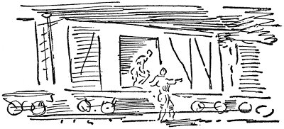
O gece tren, büyük yük katarı istasyonundaki hışırtılar, gümbürtüler arasında bir süre durduktan sonra sürgünün kapıdan çıkarıldığını duydular. Bir süre sonra Ike cesaretini toplayıp kapıyı araladı, kaskatı kesilmiş, korkunç acıkmış olarak kömür artıklarının üzerine atladılar. Öteki hatta bir başka yük katarı vardı, bu yüzden de görebildikleri tek şey, tepelerindeki gökyüzünde yıldızlardan incecik bir yoldu. Başları derde girmeksizin istasyondan çıktılar, kendilerini dört yana saçılmış, koca bir kentin ıssız sokaklarında yürür buldular.
“Winnipeg oldukça ıssız görünüşlü bir kent, bak söylüyorum sana,” dedi Ike.
“Gece yarısını geçmiş olmalı.”
Aylak aylak dolaştılar, dolaştılar, sonunda dükkânını kapatmakta olan bir Çinli'nin işlettiği aşevi buldular. Yahni, patates ve kahveye kırk sent ödediler. Çinli'ye tezgâhın arkasında, yerde uyumalarına izin verip vermeyeceğini sordular, ama Çinli kollarından tuttuğu gibi onları sokağa atıverdi, kendilerini yine pestil gibi, Winnipeg'in geniş, ıssız sokaklarında aylak aylak dolaşır buldular. Bir yerlerde oturamayacakları kadar soğuktu hava. Otuz beş sente onlara yatak vereceğe benzeyen hiçbir yer de yoktu görünürde. Yürüdüler, yürüdüler, zaten gökyüzü de kuzey yazının gündoğumuyla ağır ağır açılıyordu. Gün tam olarak doğunca yine Çinli'ye gidip otuz beş sentlerini yulaf lapasıyla kahveye harcadılar. Sonra da Kanada Pasifik İş Bulma Kurumu'na gittiler, Banff'ta yapı işinde çalışmak için adlarını yazdırdılar. Tren kalkana kadar bekleyecekleri saatleri Halk Kitaplığı'nda geçirdiler. Mac, Bellamy'nin Geriye Bakış'ının bir bölümünü, Ike da, Karl Marx'ın kitaplarını bulamadığından Strand Magazine'de Uyuyan Uyanınca'nın o günkü bölümünü okudu. Bu yüzden de trene bindiklerinde yaklaşmakta olan Sosyalist devrimle dopdoluydular. Karşılarında oturan uzun kırmızı suratlı iki oduncuya devrimi anlatmaya başladılar. Biri boyuna sessizce tütün çiğneyip durdu, ama öteki tütün parçasını pencereden tükürüp, “Hey ahpaplar, tatlı canınızı düşünüyorsanız şu zırıltıyı kesin bakalım,” dedi. “Vay anasını, bu özgür bi ülke, dii mi? Herkes konuşmakta özgür dii mi?” dedi Ike.
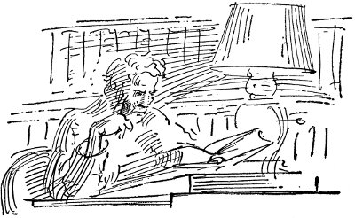
“Ustası, çenesini tutmasını söylemediği sürece konuşabilir.”
“Canına yandığım, kavga aramıyorum,” dedi Ike.
“Aramasan iyi edersin,” dedi öteki adam, bir daha da konuşmadı.
Yaz boyu Kanada Pasifik Karayolları'nda çalıştılar. Ekimin birinde Vancouver'daydılar. Yeni bavullar, yeni giysiler edinmişlerdi. Ike'ın kırk dokuz dolar elli senti, Mac'ın yepyeni domuz derisi cüzdanda seksen üç doları vardı. Mac'ın parası poker oynamadığı için daha çoktu. İlk boş sabahlarında, bir buçuk dolara ortak oda tutup prensler gibi yattılar. Güneşten yanmışlar, güçlenmişlerdi, elleri pütür pütürdü. Ağır pipo dumanından, pis ayak kokusundan, kulübelerdeki tahtakurularından sonra temiz yataklarıyla küçük, tertemiz otel odası onlara saray gibi geliyordu.
Tam olarak uyanınca, Mac kalkıp Ingersoll marka saatine uzandı. On birdi. Deniz kıyısındaki orman yangınının dumanı yüzünden camdaki güneş ışığı kıpkırmızıydı. Kalkıp, muslukta soğuk suyla yıkandı. Havluyla kollarını, yüzünü ovuşturarak odada bir aşağı bir yukarı dolaştı. Kalın, yeni havluyla kurulanırken boynunun kıyılarını, omuzlarının arasındaki boşluğu, kollarının kaslarını elleriyle izlemek hoşuna gitti.
“Hey, Ike, ne yapalım dersin? Bence fiyakalı iki yolcu gibi gemiyle, Seattle'a gidelim. Yerleşip matbaa işi bulmak istiyorum, onda iyi para var. Bu kış deliler gibi çalışıcam. Sen ne düşünüyorsun Ike? Şu fare deliğinden çıkıp Tanrı'nın topraklarına geri dönmek istiyorum. Ne düşünüyorsun Ike?”
Ike homurdanıp yatakta yuvarlandı.
“Tanrı aşkına Ike, uyan artık. Şu kasabaya bir göz atalım.”
Ike yatakta oturdu. “Lanet olsun, ben kadın istiyorum.”
“Seattle'da harika karılar olduğunu duydum, namussuzum Ike.”
Ike yataktan fırlayıp tepeden tırnağa her yanına soğuk su çarpmaya başladı. Sonra giysilerini üzerine çekip pencereden bakarken saçlarındaki suları tarakla atmaya koyuldu.
“Ne zaman kalkıyor gemi? Vay canına, dün gece iki kez boşaldım rüyamda, ya sen?”
Mac kızardı. Başını salladı.
“Bir an önce kendimize kadın bulmalıyız. Bu rüyalar adamı zayıflatır.”
“Ben hastalık kapmak istemem.”
“Boş versene, üç kez kapmayan adam sayılmaz.”
“Boş ver, hadi yürü kenti görelim.”
“Ne yani, yarım saattir seni bekleyen ben diil miyim?”
Koşarak merdivenleri inip sokağa çıktılar. Kıyıdaki kereste fabrikalarından yükselen şarapsı kokuyu duyarak, parktaki büyük ağaçların altında gezinerek Vancouver'i dolaştılar. Sonra da gemi biletlerini alıp bir mağazaya girdiler. Çizgili boyunbağları, renkli çoraplar, dört dolara da ipek gömlekler satın aldılar. Victoria ve Seattle gemisinin iskelesini çıkarlarken yeni bavullarıyla, yeni giysileriyle, ipek gömlekleriyle kendilerini milyonerler gibi hissediyorlardı. Sigara içip kızlara bakarak güvertede dolaştılar. “Hey yavrum, şurda iki kız var, kolay lokmaya benziyorlar . . . Bu işleri iyi bildiklerine bahse girerim,” diye Mac'ın kulağına fısıldayan Ike, güvertenin öteki yanına doğru yürüyen, geniş kenarlı şapka giymiş iki kız yanlarından geçerken dirseğiyle arkadaşının kaburgalarını dürttü. “Hadi gel tavlayalım şunları.”
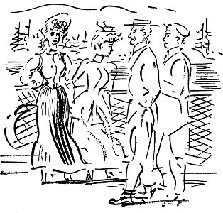
Barda iki bira içip yine güverteye çıktılar. Kızlar gitmişti. Bir süre güvertede avare avare dolaştılar, sonra geminin kıçında korkuluklardan aşağı bakan kızları buldular. Bulutlu, mehtaplı bir geceydi. Diken diken yaprağını dökmeyen ağaçlarla kaplı karanlık adalar, deniz, benek benek gümüşsü parıltıyla bir ağararak bir karararak ışıldıyordu. İki kızın da kıvırcık saçları, gözlerinin altında siyah halkalar vardı. Mac, çok yaşlı göründüklerini düşünüyordu, ama Ike onlara balıklama daldığından bir şeyler söylemek için artık çok geçti. Konuştuğu kızın adı Gladys'ti. Adı Olive olanın görünüşü daha hoşuna gitmişti, ama Ike hemen kızın yanında bitivermişti. Kızlar üşüdüklerini söyleyinceye kadar şakalaşıp gülüşerek güvertede durdular, sonra salona inip bir sıraya oturdular. Ike gidip bir kutu şekerleme aldı.
“Bu gece yemekte soğan yedik,” dedi Olive. “Umarım siz delikanlılar aldırmazsınız buna. Gladys, sana demedim mi gemiye binmeden şu soğanları yemesek diye.”
“Bana bir öpücük ver de aldırıp aldırmadığımı söyliyim sana,” dedi Ike.
“Hey ahbap, bizimle böyle konuşamazsın, hiç değilse bu gemide,” diye terslendi Olive, ağzının iki yanında beliren derin çizgilerle.
“Gemide yaptıklarımıza çok dikkat etmeliyiz,” diye açıkladı Gladys. “Bugünlerde gemide yolculuk eden yalnız iki kızdan korkunç kuşkulanıyorlar. Suç değil mi yani şimdi bu?”
“Elbette suç,” diyerek Ike ona biraz daha sokuldu.
“Boş versene sen . . . Hoop de ve açıl bakalım. Gayet ciddiyim.” Olive gidip karşıdaki sıraya oturdu, Ike onu izledi.
“Eskiden bu gemilerde istediğimizi yapardık, ama nerde o günler,” diyen Gladys, Mac'la alçak, dostça bir sesle konuşuyordu. “Konserve fabrikalarında mı çalışıyordunuz çocuklar?”
“Yoo, yaz boyu Kanada Pasifik Karayolları'nda çalıştık.”
“Dünyanın parasını kazanmış olmalısınız.” Kendisiyle konuşurken, Mac, göz ucuyla arkadaşına bakmakta olduğunu gördü onun.
“Şeey . . . pek de değil . . . şöyle bir ellilik kadar biriktirdim.”
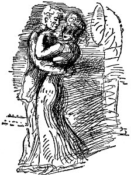
“Şimdi de Seattle'a gidiyorsun.”
“Orada linotip operatörlüğü işi bulmak istiyorum.”
“Biz de Seattle'da oturuyoruz. Olive'le benim bir katımız var . . . Hadi güverteye çıkalım, burası çok sıcak.”
Olive'le Ike'ın önünden geçerlerken Gladys eğilip Olive'in kulağına bir şey fısıldadı. Sonra da yumuşacık gülümsemeyle Mac'a döndü. Güverte boştu. Kolunu beline dolamasına izin verdi. Parmaklarının altında bir tür korsenin katılığını duydu. Sıktı. “Ah, böyle hoyratlık etme oğlum,” diye alçak, yabansı sesle sızlandı. Mac güldü. Elini çekerken kızın göğsünün ucuna dokundu. Yürürken bacakları onunkilere değiyordu. İlk olarak bir kıza böylesine yakındı.
Bir süre sonra kız yatması gerektiğini söyledi. “Ben de sennen gelsem mi?”
Kız başını salladı. “Bu gemide olmaz. Yarın görüşürüz, belki arkadaşınla birlikte bizim eve gelirsiniz. Size kenti gösteririz.”
“Tabii,” dedi Mac. Yüreği güm güm atarak güvertede dolaştı. Gemi makinelerinin vuruşunu, yarılan suların ok biçiminde kabarışını duyabiliyor, kendini onlara benzetiyordu, Ike'a rastladı.
“Benim kız yatması gerektiğini söyledi.”
“Benimki de.”
“İş çıkarabildin mi bari Mac?”
“Yarın görecez onları. Seattle'da apartman katları var.”
“Ben, benimkinden bir öpücük aldım. Korkunç ateşli. Hey yavrum, beni bitiricek sandım.”
“Yarın beceririz kızları.”
Ertesi gün hava güneşliydi. Gemiden indiklerinde kıyı pırıl pırıldı, kereste depolarının kokusu geliyor, arabaların takırtılarıyla, sürücülerin bağırışlarıyla uğulduyordu. Oda bulmak için YMCA'ya gittiler. İşçilik yaptıkları, evsiz barksız ortalıkta kaldıkları günler bitmişti artık. Tertemiz işleri olacak, doğru dürüst yaşayacaklar, geceleri okula gideceklerdi. Gün boyu kenti dolaşıp akşamüstü Pioneer Alanı'nda, totem direğinin önünde Olive ve Gladys'le buluştular.
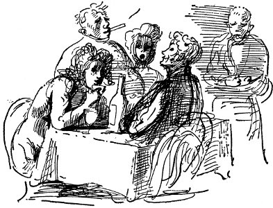
Her şey çok çabuk oldu. Lokantaya gittiler, güzelce karınlarını doyurup şarap içtiler, sonra da bando çalan bira bahçesine uğrayıp viski içtiler. Kızların evine giderken yanlarına bir şişe daha viski aldılar. Mac bunu neredeyse merdivenlere düşürüyordu, kızlar, “Tanrı aşkına bu kadar gürültü çıkarmayın, yoksa aynasızları başımıza toplayacaksınız,” dediler. Evleri amber ve pudra kokuyordu, iskemlelerin üstünde, her yanda kadın iç çamaşırları vardı. Kızlar ilk iş olarak ikisinden de on beşer kâğıt aldılar. Mac kendi kızıyla birlikte banyodaydı, kız onun burnuna dudak boyası bulaştırdı, güldüler, güldüler. Mac ileri gidip suratına şamarı yiyene kadar. Sonra yine hepsi masanın çevresine oturdular, daha içtiler, Ike yalınayak Salome dansı yaptı. Mac bu gösteriye katıla katıla güldü. Oysa şimdi yerde oturuyordu, kalkmaya çalışınca yüzüstü düştü, sonra ansızın banyo teknesinin içine kusuyor, Gladys ona sövgüler yağdırıyordu. Kız Mac'ı giydirdi, yalnızca boyunbağını bulamadı. Herkes, çok kötü kafayı buldun, dedi ve onu dışarı attılar, sokaklarda yürüyordu şimdi, bir yandan da şarkı söyleyerek: “Hoop de de şöyle açıl bakalım, açıl bakalım” Sonra aynasıza YMCA'nın nerede olduğunu sordu, polis onu karakolda hücreye tıkıp kilitledi.
Başı kazan gibi uyandı. Gömleğinde kusmuk, pantolonunda sökük vardı. Bütün ceplerini aradı, ama cüzdanını bulamadı. Polisin biri hücre kapısını açıp toz olmasını söyledi, bıçak gibi gözlerine batan, kamaştıran güneşe çıktı, yürüdü. YMCA'da masa başında oturan adam içeri girerken ona garip garip baktı, ama Mac odasına çıkıp, kimse kendisine bir şey söylemeden yatağa yattı, Ike daha gelmemişti. Uykusunda başının ağrıdığını hissederek kestirdi. Uyandığında Ike yatakta oturuyordu. Gözleri pırıl pırıl, yanakları kırmızıydı. Hâlâ biraz sarhoştu.
“Seni dışarı attılar diil mi Mac? Cüzdanımı bulamıyorum, geri dönmeye çalıştım ama evi de çıkaramadım. Tanrım, şu orospuları bir güzel pataklasaydım keşke . . . Hâlâ kütük gibi sarhoşum. Şey, şu masada oturan herif toz olmamızı söyledi. YMCA'da sarhoşları istemiyorlarmış.”
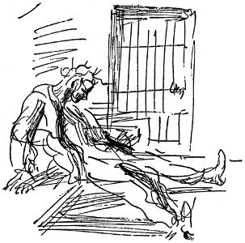
“Aman, yahu bir haftalık da para ödemiştik.”
“Birazını geri verecek . . . Canı cehenneme Mac . . . Meteliğimiz yok ama ben çok iyiyim . . . Şey, seni dışarı attıktan sonra senin kızla kapıştım.”
“Lanet olsun, çok kötü midem bulanıyor.”
“Daha kötü olurum diye korktuğumdan uyumak istemiyorum. Hadi dışarı çıkalım, iyi gelir.”
Öğleden sonra üçtü. Kıyıdaki Çin lokantasına gidip kahve içtiler. Bavullarını verdikleri tefeciden iki dolar almışlardı. Tefeci kirli oldukları için ipek gömlekleri istememişti. Dışarda bardaktan boşanırcasına yağmur yağıyordu.
“Ne diye ayık kalacak kadar aklımızı kullanmadık ki? Kaz kafalıyız biz Ike.”
“İyi bir eğlenceydi . . . Yüzüne bulaşan dudak boyasıyla çok gülünçtün.”
“Kendimi çok kötü hissediyorum . . . Çalışmak, bir şeyler yapmak istiyorum, yani anlıyorsun ne demek istediğimi, kahrolasıca köle tüccarı olmak için değil de, sosyalizm için, devrim falan için çalışmak istiyorum. Şu yol işindeki kahrolasıca herifler gibi çalışıp çalışıp sonra da paraları eğlenceye savurmak, çalışmak, eğlenmek istemiyorum.”
“Tanrı'nın cezası, bir daha sefere aklımızı kullanıp cüzdanlarımızı güvenli bir yere bırakırız . . . Vay anasını, her yanım dökülüyor.”
“O baş belası ev yansa bile dışarı çıkacak gücü bulamazdım.”
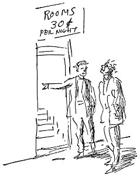
Ellerinden geldiğince uzun süre Çinli'nin yerinde oturdular, sonra yağmura çıkıp otuz sente döküntü bir otel buldular, geceyi orada geçirip tahtakurularına yem oldular. Sabahleyin, Mac matbaa işinde, Ike deniz acentelerinde iş aramaya gitti. Talihsiz geçen günün sonunda buluşup güzel bir gece olduğu için parkta uyudular. Sonunda, ikisi de Snake Irmağı boyunca kereste işçiliğine yazıldılar. Acente onları Finli, İsveçli dolu bir arabayla gönderdi. Yalnızca Ike'la Mac İngilizce konuşuyordu. Oraya vardıklarında ustabaşının korkunç acımasız, yiyeceklerin rezalet, yatakların leş gibi olduğunu görüp birkaç gün sonra sıvışarak işi yine serseriliğe vurdular. Daha şimdiden Mavi Dağlar'a soğuk çökmüştü, yollardaki kereste kamplarının aşocaklarından yiyecek dilenmeselerdi, açlıktan öleceklerdi. Baker City'deki demiryoluna ulaştılar, yük katarlarıyla Portland'a dönmeyi başardılar. Giysileri çok pis olduğu için Portland'da iş bulamadılar, koskoca uçsuz bucaksız Oregon Ovası'nda güneye doğru yola düzüldüler. Ova, meyve bahçeleriyle doluydu. Ahırlarda uyudular, arada bir çiftlik evinde odun kesip ufak tefek işler yaparak karınlarını doyurdular.
Salem'de Ike hastalık kapmış olduğunu anladı, geceler boyu Mac kendisinin de kapmış olabileceği korkusuyla uyku uyumadı. Salem'de doktora gittiler. Kocaman ablak suratlı, yürekten kahkahalar atan bir adamdı doktor. Paraları olmadığını söyledikleri zaman, bunda sakınca görmediğini, ufak tefek işler yaparak muayene parasını ödeyebileceklerini anlattı, ama zührevi hastalıkları olduğunu duyunca günahın bedeli üzerine ateşli bir nutuk atarak onları kapı dışarı etti.
Bin bir güçlük içinde yola düzüldüler, açtılar, ayakları ağrıyordu, Ike'ın ateşi vardı, yürürken canı yanıyordu, ikisi de hiçbir şey konuşmadı. Sonunda, Güney Pasifik'in ana hattında, su tankları bulunan küçük bir meyve yükleme istasyonuna vardılar. Orada Ike daha fazla yürüyemeyeceğini, yük katarı beklemeleri gerektiğini söyledi. “Lanet olsun, zindan bile bundan iyidir.”
“Şu canına yandığım ülkede talihin yoksa yok demektir,” dedi Mac, nedense buna ikisi de güldüler.
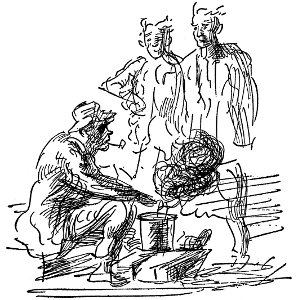
İstasyonun arkasındaki çalıların arasında, tenekenin içinde kahve kaynatan yaşlı bir adam buldular. Onlara, kahve, ekmek, sucuk kabuğu verdi, onlar da adama dertlerini anlattılar. Adam kış için güneye gitmek istediğini, bu hastalığı iyileştirecek şeyin kiraz çekirdeğiyle saplarından yapılan çay olduğunu söyledi. “Ama hangi cehennemden bulacağım kiraz çekirdeğini, sapını?” Her neyse, yaşlı adam, üzülmemesini, bunun kötü bir soğuk algınlığından daha kötü olmadığını söyledi. Neşeli, pislik suratına kahverengi deriden maske gibi yapışmış bir ihtiyardı. Günbatımından biraz sonra, su almak için duran yük katarında talihini deneyeceğini anlattı. Yaşlı adamla Ike konuşurken Mac şekerleme yaptı. Uyandığında Ike avaz avaz bağırıyordu. Kalkmış olan katara yetişmek için koşuyorlardı hepsi de. Karanlıkta Mac'ın ayağı kaydı, demiryolu traverslerinin üzerine yüzükoyun kapaklandı. Dizini vurdu, burnuna küller doldu. Ayağa kalktığı zaman görebildiği tek şey kasım ayının pusu içinde kaybolan trenin arkasındaki iki ışıktı.
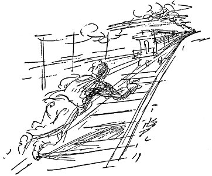
Ike Hall'ı bu son görüşü oldu.
Yine yola koyuldu, bir çiftlik evine varana kadar topallayarak yürüdü. Bir köpek havlayıp paçalarını çekiştirdi, ama buna aldırmayacak kadar bitkindi. Sonunda iriyarı bir kadın kapıya çıkıp ona bayat bisküvilerle elma ezmesi verdi, tüm kibritlerini bırakırsa ahırda uyuyabileceğini söyledi. Topallayarak ahıra gitti, taze otların içine sığındı, uyudu.
Sabahleyin uzun boylu, kırmızı yüzlü, yankılı sesi olan, Thomas adındaki çiftçi, ahıra gelip yiyecek, yatacak yer karşılığı birkaç gün çalışmasını istedi. Ona çok iyi davrandılar, Mac'ın neredeyse âşık olduğu Mona adında güzel bir de kızları vardı. Şişko, al yanaklı, erkek gibi güçlü, hiçbir şeyden korkmayan bir kızdı. Kız, Mac'a yumruklar attı, onunla güreşti, biraz toparlanıp dinlendikten sonra geceleri onu düşünmekten Mac'ın uykuları kaçtı. Akşamları taze ottan yatağına uzanıp, meyve ağaçlarına ilaç püskürttükleri hortumu geri uzatırken, budadıkları dalları yakmak için demet yaparken kendisininkine sürtünen çıplak kolun dokunuşunu, göğüslerinin yuvarlaklığını, akşamları yemekten sonra oynaşır, şakalaşırken ensesinde duyduğu soluğunun tatlılığını kendi kendine yineledi durdu. Oysa Thomas'ların kızları için düşündükleri başka şeyler vardı, artık Mac'a ihtiyaçları kalmadığını söylediler. Bir yığın iyi öğüt, birkaç yıpranmış giysi, gazete kâğıdına sarılı soğuk yemek verip beş para ödemeden onu incelikle uğurladılar. Tozlu demiryolunda yürürken Mona arkasından koştu, annesiyle babasının gözleri önünde onu öptü. “Ben seninim,” dedi. “Çok çok para kazan, geri dönüp benimle evlen.”
“Yemin ederim yapacağım bunu,” dedi Mac, gözlerinde yaşlarla, içi mutluluk dolu yürüyüp gitti. Seattle'daki o kızdan hastalık kapmamış olduğu için özellikle seviniyordu.
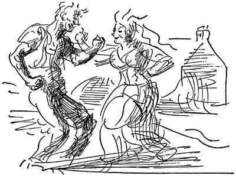